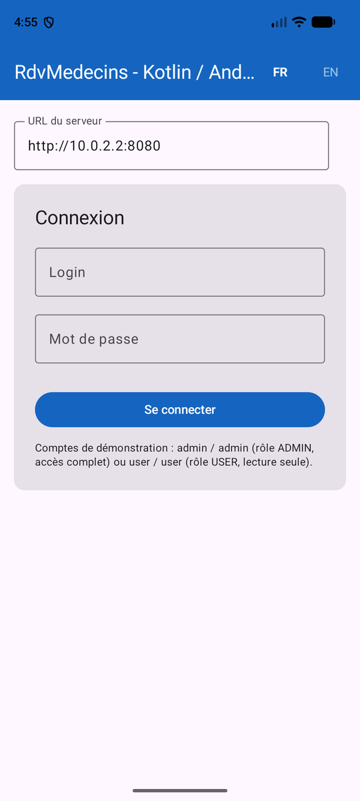
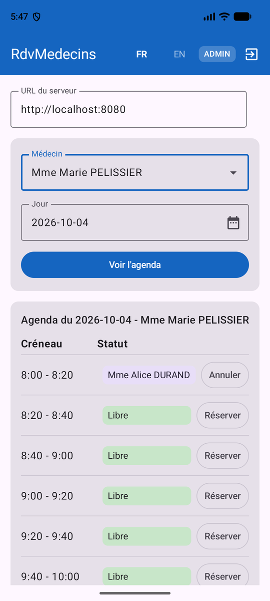

1. Introduction
The PDF in the document is |HERE|.
The code in this document is |HERE|.
This document is a product of Anthropic’s IA Claude. Its purpose is to adapt the document “An Example of a Client/Server – AngularJS 1.x / Spring 4” in two ways:
- the client AngularJS 1.x is replaced by a native Android application written in [Kotlin] using [Jetpack Compose];
- the Java Spring web framework MVC is replaced by the web framework [NestJS];
To do this, it follows, chapter by chapter, the document “An Example of a Client/Server Application—Flutter / NestJS (2026)”: same server, same database, same client architecture—only the client framework changes, with Flutter (Dart) being replaced by Jetpack Compose (Kotlin).
Claude from Anthropic (IA) did most of the work:
- code generation: Claude generated all of the Kotlin client code. He compiled and tested it himself in an Android emulator on the reviewer’s computer, with the reviewer’s permission; the emulator screenshots were taken during these tests;
- generating the course in ODT format: Claude generated the document, which the reviewer proofread and tested by following along with it.
Note 1: If the reader’s primary goal is to “learn NestJS,” an introduction to this web framework is available in the document Introduction to the TypeScript Language and the NestJS Web Framework Through Examples. In this document, the NestJS server is treated as a black box. You are told how to use it, but its code is not described.
Note 2: The programming language used in this document is [Kotlin]. Its fundamentals (classes, data classes, nullability, lambdas, extension functions, collections, etc.) are assumed to be known: they are covered in the Kotlin course. Concepts specific to Android or Jetpack Compose, as well as coroutines, are explained throughout the document.
Note 3: Claude often refers to the [Flutter] client from the course “An Example of a Client/Server Application—Flutter / NestJS” (2026), of which this document is a port, and sometimes to the Angular, React, and Vue.js web clients for the same application. These comparisons help readers who are familiar with one of these frameworks, but knowledge of any of them is not required to follow this document.
Note 4: If you feel that Claude’s explanations are not sufficient, submit a request to Claude asking for clarification on a specific point in his course. This is often helpful.
Serge Tahé, October 2026
==
This document is a follow-up to the course “An Example of a Client/Server Application—AngularJS 1.x / Spring 4,” written in 2014. That original document built a small application for scheduling medical appointments (“[RdvMedecins]”) using a Spring 4 / Spring Data / Spring MVC server and a AngularJS 1.x client.
Twelve years later, the two frameworks used have evolved significantly—or have even been replaced in common use:
- on the server side, [NestJS] has established itself as one of the most widely used Node.js/TypeScript frameworks for building structured web applications, with a philosophy similar to that of Spring (modules, controllers, services, dependency injection);
- On the client side, apps are increasingly being accessed on a phone. This document therefore describes an Android app named NATIVE: written in [Kotlin], the language recommended by Google for Android since 2019, and featuring an interface described using [Jetpack Compose], Android’s declarative UI library (stable since 2021), which replaces the old system of views described in XML.
The goal of this document is to revisit the original case study—the same app, the same features, the same database—and rebuild it using current tools, while maintaining as much of the same instructional progression as the 2014 document and its 2026 Flutter variant as possible.
1.1. A Step-by-Step Reconstruction
The original document was approximately 300 pages long and covered, in addition to the application’s core functionality—role-based authentication (Spring Security)—twelve progressive examples for learning AngularJS and 1.x step by step. Like the Flutter variant, this document covers:
- the application’s general architecture (unchanged in principle);
- the database (unchanged, except for the addition of the [users] table);
- the installation of the complete [NestJS] server, whose appointment viewing and booking/cancellation features are tested using Postman—its code is not covered here;
- token-based authentication (JWT) and role-based access control (ADMIN/USER) for this server—we’ll simply learn how to use them, first via Postman and then via the client;
- the corresponding Android client, with the same features, a login screen, an interface tailored to the logged-in user’s role (Material Design 3), and the ability to switch the interface between French and English ([TranslationsService]).
Two features from the original document are omitted from this document, as in the Flutter version: the original client’s “debug” mode, which has been deliberately left out (see Chapter 6), and the configuration of an artificial network delay, which has been postponed to a later stage.
1.2. Who This Document Is For
This document assumes no prior knowledge of Android, Jetpack Compose, or [NestJS]. Each new concept (activity, @Composable function, state, ViewModel, coroutine, HTTP interceptor, etc.) is explained as it appears. However, some basic knowledge is still helpful:
- a basic understanding of the Kotlin language (see the Kotlin course);
- a basic understanding of HTTP exchanges (GET/POST methods, JSON format);
- experience using the command line (cd, npm install...).
Knowledge of Flutter is not required: the numerous comparisons with the Flutter client are intended for readers who have taken this course, but each concept is first explained on its own.
1.3. The Application Architecture
The overall architecture of the application has not changed since the original document:
- the client presents the user with a single interface, built on the Component model (view + associated logic), which relies on services to communicate with the server—in this case, an Android app running on the phone’s system;
- the user interacts with the application’s screens. The user’s actions sometimes require a request to be sent to the server [NestJS], which processes the request and returns a response JSON; this response is used to update the screen displayed to the user.
The application under study will have the following architecture:

- In [1], the Android application user queries the [présentation] [2] layer of the application;
- to execute the action requested by the user, the [présentation] [2] layer may query the [Services] [3] layer;
- To provide the requested service, the [3] layer may need to query [4], the remote server JSON implemented by [NestJS];
- Depending on the request received in [5], the [6-8] layers may be queried;
- the server’s response returns the [2-8] layers in reverse order;
- the screen displayed to the user ([1]) reflects this response.
Note: If you’re confused by the project’s architecture, refer back to this diagram. Note that SGBD is processed by the server, not by the client.
1.4. Tools Used
This document uses the following tools (their installation is detailed in Chapters 1 and 2):
- Node.js (version 22 or later) and npm, to run the [NestJS] server;
- [Android Studio], Google’s development environment for Android. It provides everything the client needs: the code editor (built on IntelliJ and IDEA), Android Studio, a JDK (the JetBrains Runtime), the Android emulator, and the [Gradle] build tool. Unlike the Flutter course, where Android Studio was used only to install the SDK Android emulator, here it serves as the client editor;
- Visual Studio Code (or any other editor) for the NestJS server, if you want to view its code;
- [MySQL] 8 for the database, installed with Laragon;
- Postman (or any other HTTP client) to test the server’s URL;
- an Android phone (optional): an emulator is sufficient to follow along with this entire document.
1.5. Application Features
The “business” features of the [RdvMedecins] app are the same as those of the previous versions:
- A medical practice employs several doctors, each with their own consultation time slots;
- a user must log in (username/password) to access the app;
- Once logged in, the user can select a doctor and a day, and view the doctor’s schedule for that day: each time slot appears either available or booked;
- a user with the role ADMIN can also book an available time slot for a patient of their choice and cancel an existing appointment;
- A user with the role USER can view the schedules but cannot book or cancel appointments (read-only access).


Above is the app in the Android emulator: the login screen, followed by a doctor’s calendar, and then the screen after booking a time slot.
1.6. What’s changed, what hasn’t
Original document (2014) | Flutter variant (2026) | This document (2026) | |
MySQL 5 | MySQL 8, same tables | identical to the Flutter variant | |
Java, Spring 4 | TypeScript, NestJS | same server NestJS | |
JavaScript, AngularJS 1.x | Dart, Flutter (mobile, desktop, web) | Kotlin, Jetpack Compose (Android) | |
browser | native code compiled by Flutter | Android virtual machine (ART) | |
Bower | Flutter / Pub | Gradle | |
Spring Security, HTTP Basic | Passport/JWT | Passport/JWT (same server) | |
angular-translate | TranslationsService (handmade) | TranslationsService (handmade, same dictionaries) |
1.7. Organization of this document
- Chapter 1 - Setting Up the Work Environment: Install Android Studio and SDK Android, open the client’s project, create an emulator, and set up a phone.
- Chapter 2 - Installing the [NestJS] server: installing Laragon and the MySQL database, configuring, starting, and testing the server, then running the client for the first time.
- Chapter 3 - Introduction to Android and Jetpack Compose: activities, @Composable functions, state and recomposition, CompositionLocal, coroutines, lifecycle, and ViewModel—with the Flutter equivalent provided for each.
- Chapter 4 - The Kotlin client for the [RdvMedecins] app: the client’s architecture, each of its files, and a step-by-step walkthrough of the complete app.
- Chapter 5 - Running the app: emulator, phone, APK—and what you need to know about networking, unencrypted traffic HTTP, screen rotation, and narrow screens; finally, what it would take to also target iOS, the desktop, and the web.
- Chapter 6 - Conclusion and Next Steps.